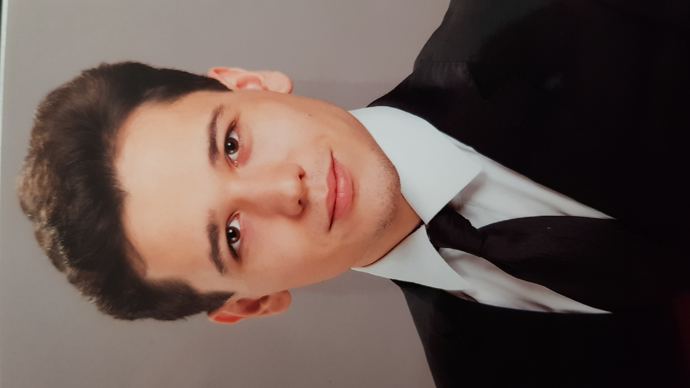

BÉKÉSI DÁNIEL
Békési Dániel vagyok, a Budapesti Műszaki Egyetem egyik második féléves gépészmérnök hallgatója.
Mióta az eszemet tudom, az autók szerelmese vagyok,
az MSc elvégzése után az autóiparban szeretnék
elhelyezkedni, leginkább tervezőmérnökként.
Az autóiparon belül szeretnék a robbanómotorokkal
foglalkozni, mert úgy gondolom, hogy még, ha az
elektromos motoroké is a jövő, a robbanómotorok is érdemelnek még esélyt.